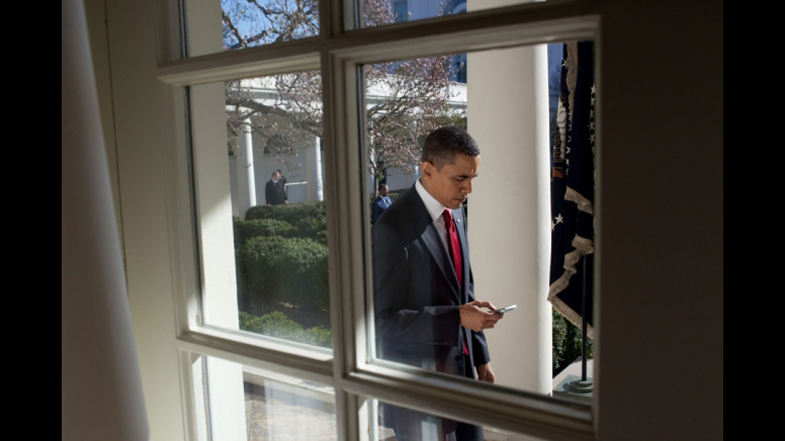
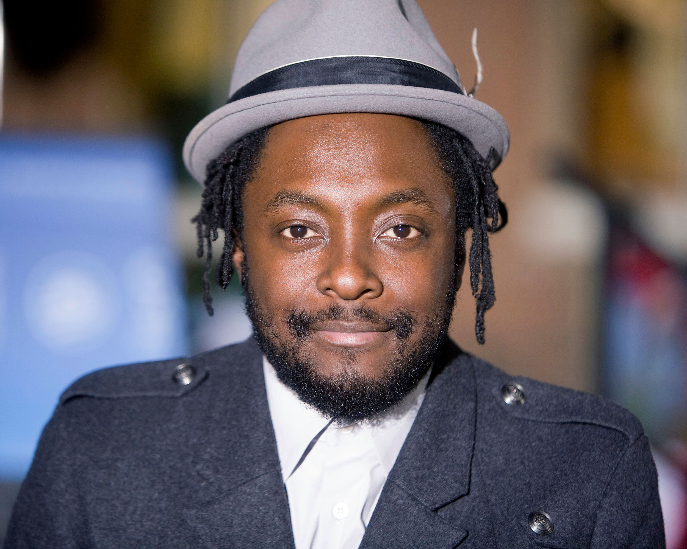

In an era when work, discourse, and play are increasingly experienced via the Internet, it is fitting that politics have surged online as well in a recent phenomenon known as digital democracy. Digital democracyThe use of the Internet and other online tools to engage citizens in government and civic action.—also known as e-democracy—engages citizens in government and civic action through online tools. This new form of democracy began as an effort to include larger numbers of citizens in the democratic process. Recent evidence seems to confirm a rising popular belief that the Internet is the most effective modern way to engage individuals in politics. “Online political organizations…have attracted millions of members, raised tens of millions of dollars, and become a key force in electoral politics. Even more important, the 2004 and 2008 election cycles show that candidates themselves can use the Internet to great effect.”Matthew Hindman, The Myth of Digital Democracy (Princeton, NJ: Princeton University Press, 2008), 4.
Figure 15.6
President Barack Obama has been called “the digital candidate” for his use of digital technology during his 2008 presidential campaign.
Perhaps the best example of a political candidate putting digital democracy to use is the successful 2008 presidential campaign of Barack Obama. On June 8, 2008, following Obama’s victory in the Democratic presidential primaries, The New York Times published an article discussing the candidate’s use of the Internet in his nomination bid. Titled “The Wiki-Way to the Nomination,” the article credits Obama’s success to his employment of digital technology: “Barack Obama is the victor, and the Internet is taking the bows.”Noam Cohen, “The Wiki-Way to the Nomination,” New York Times, June 8, 2008, http://www.nytimes.com/2008/06/08/weekinreview/08cohen.html.
Obama’s campaign certainly is not the first to rely on the Internet. Another Democratic presidential hopeful, Howard Dean, famously built his campaign online during the 2004 election cycle. But the Obama campaign took full advantage of the possibilities of digital democracy and, ultimately, secured the Oval Office partially on the strength of that strategy. As one writer puts it, “What is interesting about the story of his digital campaign is the way in which digital was integrated fully into the Obama campaign, rather than [being] seen as an additional extra.”Eliza Williams, “The Story Behind Obama’s Digital Campaign,” Creative Review, July 1, 2009, http://www.creativereview.co.uk/cr-blog/2009/june/the-story-behind-obamas-digital-campaign. President Obama’s successful campaign serves as an excellent example of the possibilities of digital democracy.
Several existing political websites proved beneficial to the Obama campaign. Founded in 1998, the liberal website MoveOn.org has long used its popularity and supporter base to mobilize citizens to vote, lobby, or donate funds to Democratic campaigns. With more than 4 million members, MoveOn.org plays a noticeable role in U.S. politics and serves as inspiration for other like-minded digital efforts.
The Obama campaign gave a nod to the success of such sites by building a significant web presence. Websites such as MyBarackObama.com formed the foundation of these online efforts. However, the success of the Obama digital campaign came from its use of online media in all its forms. The campaign turned not only to traditional websites but also to social networking sites, email outreach, text messages, and viral videos.
More and more, digital democracy demands that its users rely on these alternative forms of Internet outreach. Social networking site Facebook was the hub of many digital outreach efforts during the 2008 campaign. As of 2010, Barack Obama’s official Facebook page boasts more than 9 million fans, and the Obama administration uses the page to send messages about the current political climate.
Individuals not part of the official campaign also established Facebook pages supporting the candidate. Mamas for Obama emerged just prior to the election, as did Women for Obama and the Michelle Obama Fan Club. The groups range in size, but all speak to a new wave of digital democracy. Other political candidates, including 2008 Republican presidential contender John McCain, have also turned to Facebook, albeit in less comprehensive ways.
The Obama campaign also relied on email. In 2009, an article was published titled “The Story Behind Obama’s Digital Campaign” discussing the success of Obama’s use of the Internet. According to the article, 13.5 million people signed up for updates on Obama’s progress via the MyBarackObama.com website. The campaign regularly sent out emails to reach its audience.
Emails were short—never longer than 300 words—and never anonymous, there was always a consistency of voice and tone. Obama and other key figures in the campaign also contributed emails to be sent—“Michelle wrote her own emails … and more people opened those than her husband’s”—giving the campaign a personal touch and authenticity, rather than the impression of being simply churned out by the PR machine.Eliza Williams, “The Story Behind Obama’s Digital Campaign,” Creative Review, July 1, 2009, http://www.creativereview.co.uk/cr-blog/2009/june/the-story-behind-obamas-digital-campaign.
A combination of message and financial appeal, the emails were successful not only in reaching target audiences but also in earning valuable campaign dollars.
Two billion emails were then sent out, although … this email content was carefully managed, with individuals targeted with different “tracks” depending on their circumstances and whether they had already donated to the campaign…. By the end of the campaign the website had mobilized over 3 million people to contribute over $500 million online.Eliza Williams, “The Story Behind Obama’s Digital Campaign,” Creative Review, July 1, 2009, http://www.creativereview.co.uk/cr-blog/2009/june/the-story-behind-obamas-digital-campaign.
Additionally, Obama used text messaging to reach out to his supporters. During the campaign, supporters could sign up to receive text messages, and attendees at rallies and other events were asked to send text messages to friends or potential supporters to encourage them to participate in Obama’s campaign. Members of MyBarackObama.com were the first to discover his running mate selection via text message.BarackObama.com, “Be the First to Know,” Organizing for America, http://my.barackobama.com/page/s/firsttoknow. This tool proved helpful and demonstrated the Obama campaign’s commitment to fully relying on the digital world.
Figure 15.7
The music video “Yes We Can,” created by the Black Eyed Peas’ will.i.am, was viewed more than 20 million times leading up to the 2008 presidential election. It is just one example of digital campaigning used by supporters of political candidates.
Perhaps even more impressive than the campaign’s commitment to digital democracy were the e-democracy efforts of Obama’s supporters. Websites such as Barackobamaisyournewbicycle.com, a gently mocking site “listing the many examples of Mr. Obama’s magical compassion. (‘Barack Obama carries a picture of you in his wallet’; ‘Barack Obama thought you could use some chocolate’),”Noam Cohen, “The Wiki-Way to the Nomination,” New York Times, June 8, 2008, http://www.nytimes.com/2008/06/08/weekinreview/08cohen.html. emerged, but viral videos offered even stronger examples of Obama’s grassroots campaign.
One example of a supporter-created video was “Barack Paper Scissors,” an interactive game inspired by rock-paper-scissors. Posted on YouTube, the video logged some 600,000 views. The success of videos such as “Barack Paper Scissors” did not go unnoticed by the Obama campaign. The viral video “Yes We Can,” in which Barack Obama’s words were set to music by will.i.am (of the Black Eyed Peas), has been viewed more than 20 million times online. Capitalizing on the popularity of the clip, the campaign brought it from YouTube to its main website, thus generating even more views and greater exposure for its message.
Although the Internet is a powerful tool for candidates, it also propagates rumors that can derail—or at least hinder—a politician’s career. Blog posts and mass emails can be created within minutes and then reposted or forwarded in seconds. Thus, ideas spread like wildfire regardless of their relative truth. Snopes.com, a website dedicated to verifying or debunking urban legends and Internet rumors, has an entire search section dedicated to political rumors, ranging from shooting down a list of books supposedly banned by Sarah Palin to investigating whether actress Nancy Cartwright, best known as the voice of Bart Simpson, was once elected mayor of Northridge, California. The pages dedicated to major political figures such as President Obama can be huge; Obama’s page, for example, lists more than 60 debunked rumors. Some of these rumors include the questioning of his U.S. citizenship, his decision to ban recreational fishing, and his refusal to sign Eagle Scout certificates.
Many of these online rumors are accompanied by “photographic evidence,” thanks to technology such as Photoshop, which allows photographs to be manipulated with the click of a mouse. With such a spread of online rumors, savvy media consumers must be wary of what they read and seek out legitimate sources of information to verify the news that they receive.
Just as digital technology access issues can create the kinds of problems discussed in Chapter 13 "Economics of Mass Media", the digital divide can equally split the country’s involvement with politics along tech-savvy lines. Certainly, the Obama campaign’s reliance on modern technology allowed it to reach a large population of young voters; but in doing so, the campaign focused much of its attention in an area out of reach to other voters. In The Myth of Digital Democracy, author Matthew Hindman wonders, “Is the Internet making politics less exclusive?”Matthew Hindman, The Myth of Digital Democracy (Princeton, NJ: Princeton University Press, 2008), 4. The answer is likely both yes and no. While the Internet certainly has the power to inform and mobilize many individuals, it also denies poorer citizens without digital access an opportunity to be part of the new wave of e-democracy.
Nevertheless, digital democracy will continue to play a large role in politics, particularly after the overwhelming success of President Obama’s largely digital campaign. But politicians and their supporters must consider the digital divide and work to reach out to those who are not plugged in to the digital world.
Visit YouTube and search for a local or national candidate with whom you are familiar. If possible, compare the video message to those available on a candidate’s website. Then answer the following short-answer questions. Each response should be a minimum of one paragraph.